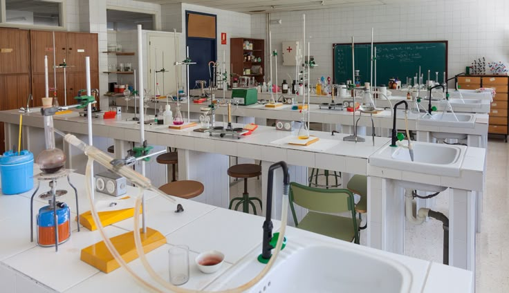

01 / CORE
Languages & humanities
Develop communication, reading, writing, historical understanding and the ability to examine ideas from different perspectives.
CommunicationCritical thinking
ACADEMIC LIFE
Discover a learning approach designed to build understanding, confidence and strong study habits.
OUR APPROACH
Use this page to publish the school's confirmed subjects, curriculum, examination pathways and academic support services.
Develop communication, reading, writing, historical understanding and the ability to examine ideas from different perspectives.
Build logical reasoning, scientific curiosity, problem-solving skills and confidence working with evidence and numbers.
Encourage responsible technology use, creativity, collaboration and the practical application of classroom knowledge.
Subject names above are illustrative categories, not an official subject list. Confirm all offerings with the school.

BEYOND THE TEXTBOOK
Discussion, guided practice, projects and constructive feedback can help students connect what they learn with the world around them.
Ask about our programme ↗STUDENT SUPPORT
A strong school experience combines high expectations with guidance and encouragement.
Add details here about extra lessons, academic counselling, study groups, library access, assessment methods and parent-teacher communication, as applicable at Glars.
Join the Glars community →